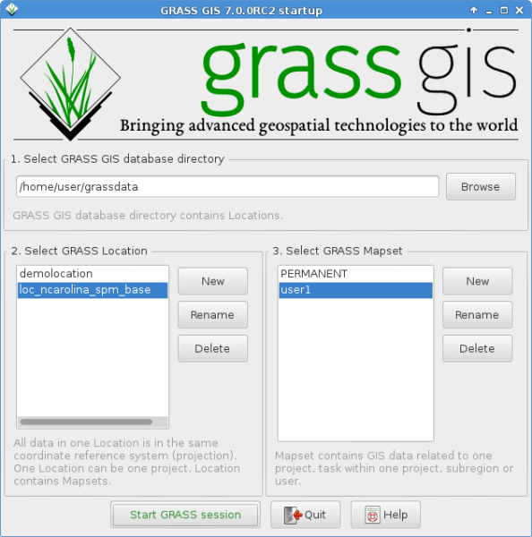
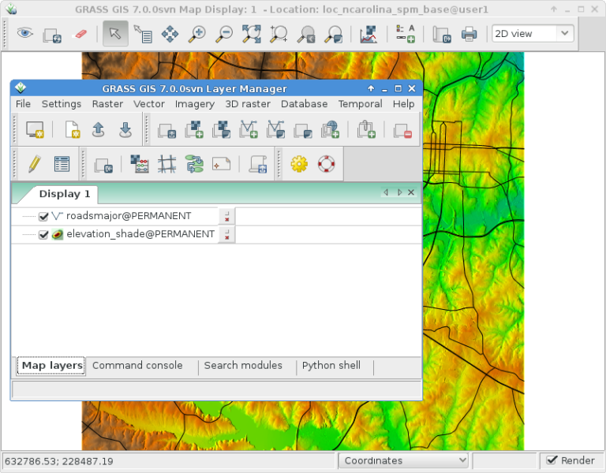
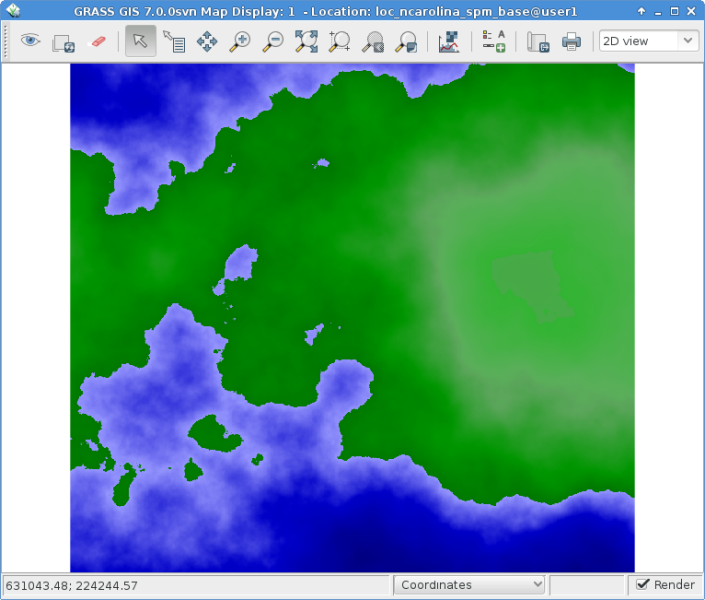
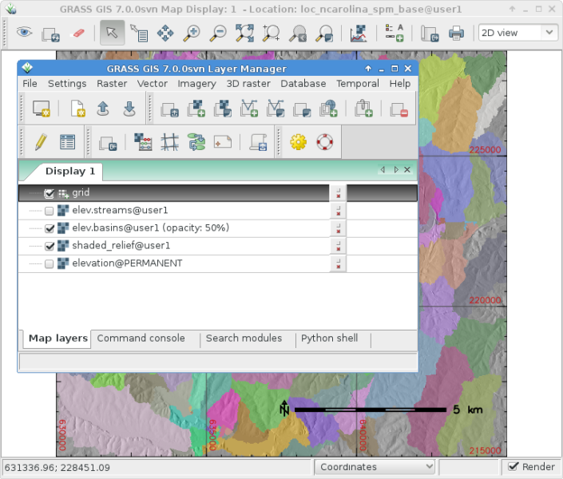
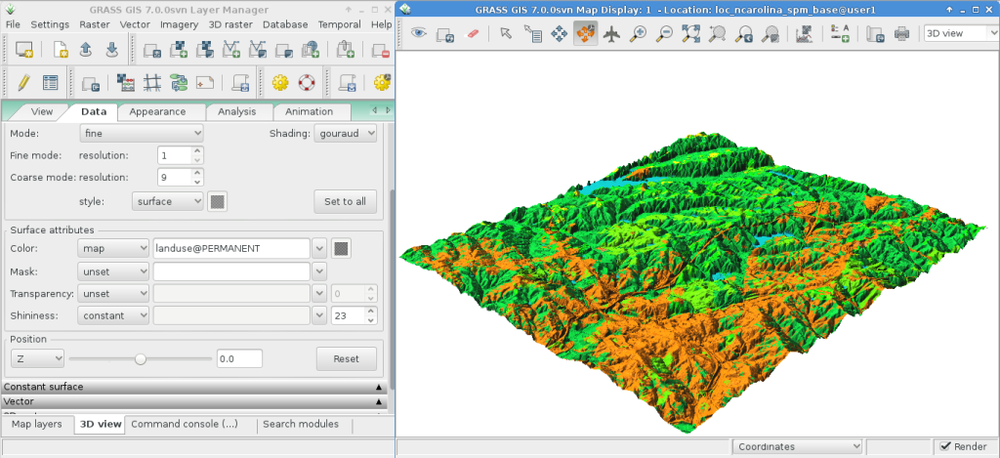

GRASS GIS Quickstart¶
GRASS GIS is a powerful GIS which lets you visualize, manage, analyse and edit geospatial data.
Contents
- GRASS GIS Quickstart
- Keine Rundreise
- Karten anzeigen
- Ein Höhenprofil erstellen
- Erstellen einer zufälligen Oberfläche
- Farben von Rasterkarten anpassen
- Erstellen einer Reliefschattierung (Schummerung)
- Wassereinzugsgebiete und Flüsse
- Vektor-Module
- Adjust vector map colors
- Managing attributes
- 3D-Visualisierung
- Weitere Aufgaben
- Beenden und die Kommandozeile
- Weiterführende Links
- Keine Rundreise
Keine Rundreise¶
Um GRASS auf der Live DVD zu starten, klicken Sie auf den GRASS Link im Menü unter . Im „Welcome to GRASS GIS“ Fenster wählen Sie den North Carolina Datensatz als Location und „user1“ als Mapset. Klicken Sie dann auf [Start GRASS].
{kind=link}
Dies started GRASS mit der grafischen Benutzeroberfläche (geschrieben in wxPython).
Tipp
Wenn Sie auf einem Netbook mit kleinem Display (800x600 Auflösung) arbeiten, kann der Startbildschirm zu groß und der [Start GRASS] Knopf eventuell versteckt sein. In diesem Fall sollten Sie das Fenster an einer Ecke etwas größer ziehen. Oder Sie können das gesamte Fenster weiter nach oben schieben, in dem Sie die Alt-Taste gedrückt halten und dann das Fenster mit der linken Maustaste verschieben.
Karten anzeigen¶
{kind=link}
Einmal geöffnet, laden Sie eine Rasterkarte, z.B.: „elevation“ aus der PERMANENT Mapset. Dazu klicken Sie in der Werkzeugleiste auf das erste Icon mit einem „+“, um eine Rasterkarte zu öffnen. Dann wählen Sie eine Karte in dem „Name der Rasterkarte, die angezeigt werden soll“ Pulldown-Liste aus und klicken auf Ok.
Auf ähnliche Weise laden Sie die Vektorkarte „roadsmajor“ aus der PERMANENT Mapset, indem Sie in der Werkzeugleite auf das zweite Icon mit einem „+“ und einer Linie, die wie ein „V“ aussieht, klicken, um eine Vektorkarte zu öffnen.
Die Schaltflächen verfügen über Tooltipps, die beim Mouseover-Ereignis erscheinen. Diese werden Ihnen weiterhelfen.
Es kann sein, dass Sie auf den Rasterlayer klicken müssen und über „Zoom to selected map(s)“ in den Bereich der Daten navigieren.
Sie sollten nun die beiden Karten im Kartenfenster sehen.
Ein Höhenprofil erstellen¶

Zurück im GIS Ebenen-Manager klicken Sie auf den Namen elevation der Rasterkarte, um sie auszuwählen. Im Map Display Fenster klicken Sie dann rechts neben den Zoom Icons auf das Symbol mit der roten Profillinie und wählen die Funktion Zu profilierende Oberflächenkarte aus. Das @PERMANENT Mapset wird automatisch gesucht. Falls die Karte elevation nicht direkt in dem Fenster Profilanalyse angezeigt wird, wählen Sie sie bitte aus und klicken auf Ok. Das zweite Icon von Links ermöglicht das Erstellen eines Profils. Wählen Sie es aus, und setzen Sie ein paar Punkte auf die Karte im Map Display. Danach gehen Sie zurück in das Fenster der Profilanalyse und klicken dort auf das Augen Icon, um das Profil anzuzeigen. Um die Analyse zu beenden, klicken Sie den Beenden Knopf ganz rechts.
Erstellen einer zufälligen Oberfläche¶
Nun erstellen wir eine neue Karte. Wählen Sie aus dem Menü (fast ganz unten); geben Sie der neuen Karte einen Namen; passen Sie Parameter im Optionen Reiter an, wenn Sie wollen (die Standards sind aber bereits ok), und klicken Sie dann auf [Run]. Sie können nun das Fenster des r.surf.fractal Moduls schließen mit dem Knopf [Schließen].
{kind=link}
Farben von Rasterkarten anpassen¶
Nun fügen Sie die neue Rasterkarte zur Kartenliste hinzu, wie Sie es bereits mit der Karte elevation gemacht haben. Die Karte liegt nun aber in der Mapset „user1“. Sie können nun auch die Anzeige der Karte elevation über das Kontrollkästchen deaktivieren. Klicken Sie wieder auf das Augen Icon, um die neue Rasterkarte anzuzeigen. Die Farben sind vielleicht nicht so, wie sie wollen, also ändern wir sie. Wählen Sie die neu erstellte Rasterkarte wieder aus und öffnen dann im Menü Raster den Eintrag aus. Im Reiter ‚Definition‘ wählen Sie aus der Auswahl „Farbname“ und wählen Sie einen Eintrag aus. Klicken Sie auf den [Los] Knopf und schließen Sie den r.colors Dialog. Die Farben sollten dann automatisch aktualisiert werden.
Erstellen einer Reliefschattierung (Schummerung)¶

Als nächstes wollen wir aus der Karte „elevation“ eine Karte mit Reliefschattierung erstellen. Als erstes stellen wir sicher, dass die „region“ auf die Rasterkarte „elevation“ in der PERMANENT Mapset gesetzt ist. Dazu wählen wir die Karte in der Layerliste aus, drücken mit der rechten Maustaste auf den Namen und wählen dann „Arbeitsbereich auf Grundlage selektierter Karte setzen“.
Im Menü Raster wählen wir nun und starten den Dialog. Mit der Karte „elevation“ @PERMANENT als Eingabe, als Ausgabe können Sie beispielweise schattiertes_relief angeben und klicken Sie anschließend bitte auf [Los]. Die neue Karte schattiertes_relief @user1 wurde in die Layerliste eingefügt. Deaktivieren Sie die Kontrollkästchen der anderen Karten, um lediglich die neu erzeugte Rasterebene anzuzeigen.
Wassereinzugsgebiete und Flüsse¶
Wieder selektieren wir die Karte elevation @PERMANENT. Wenn Sie den Ausschnitt verändert haben sollten, klicken Sie mit der rechten Maustaste auf den Layernamen wählen Sie aus dem Kontextmenü um die volle Ausdehnung für die Berechnung der Wassereinzugsgebiete zu erhalten.
Bemerkung
Die wxGUI Karte Anzeige und Zoom ist unabhängig und hat keinen Effekt auf die Berechnung. Prüfen Sie die Berechnungsregion über ; dies ist äußerst wichtig für jede Raster Grid Operation. Raster Karten mit verschiedenen Begrenzungen und Auflösungen werden on-the-fly auf die Berechnungsregion angepasst.
Wählen Sie nun im Menü Raster . Der r.watershed Dialog öffnet sich. Wählen Sie die elevation Karte als Eingabe, im Reiter ‚Eingabe Optionen‘ setzen sie threshold Wert auf 10000 Zellen, dann im Reiter ‚Ausgabe Optionen‘ geben Sie „elev.basins“ als basin Option und „streams“ für die „Name for output stream segments raster map“-Option direkt darunter an. Dann klicken Sie auf [Los].
Zurück im Ebenen-Manager fügen Sie die zwei neuen Karten wieder in die Layerliste ein. Stellen sicher, dass nur diese für die Anzeige ausgewählt sind. Klicken Sie mit der rechten Maustaste auf „elev.basins“ und wählen Sie „Deckkraft ändern“. Setzen Sie den Wert auf 50% und rendern Sie die Karte nochmal.
{kind=link}
Im Ebenen-Manager klicken Sie auf den fünften Knopf von rechts, um eine Ebene mit Gitternetz hinzuzufügen. Als size Wert geben Sie 0:03 für 0 Grad und 3 Minuten an. Das Format ist D:M:S. Im Reiter „Optional“ aktivieren Sie „Zeichnen Sie geographisches Gitter basierend auf dem aktuellen Ellipsoid“, klicken Sie auf [Los] und rendern Sie die Karten nochmal.
Um eine Maßstabsleiste anzuzeigen, klicken Sie im Map Display Fenster auf das Icon „Kartenelemente hinzufügen“ und klicken auf Nordpfeil und Maßstab hinzufügen. Lesen Sie die Instruktionen und klicken dann auf [Ok]. Eine Maßstabsleiste erscheint oben links, ziehen Sie sie in die linke untere Ecke. Aus demselben Menü wählen Sie nun „Legende hinzufügen“, wählen die Rasterkarte aus, für die eine Legende erstellt werden soll. Danach klicken Sie [Ok] und dann nochmal [Ok]. Ziehen Sie nun die Legende auf die rechte Seite des Map Displays.
Wenn Ihnen die Schriftarten nicht gefallen, können Sie im GIS Ebenen-Manager das Menü öffnen und im Reiter Fenster Schriftarten auswählen und auf den Knopf [Anwenden] klicken. Sie müssen wieder auf den Knopf „Karte neu anzeigen“ rechts neben dem Augen Icon klicken, damit die Veränderung sichtbar wird.
Vektor-Module¶
Die Aufgaben haben nur einige Rasteranalysen vorgestellt. GRASS GIS bietet aber auch eine Vielzahl von Vektor Modulen, die genauso umfangreich sind wie für die Rasteranalyse. GRASS bietet eine topologische Vektorumgebung.

Continuing with the watershed basins created above, next we’ll convert
them into vector polygons. In the Raster menu select .
In the r.to.vect dialog that opens make sure that elev.basins @user1 is
selected for the input map, give a name for the output map like basins_areas
(vector map names must be SQL compliant, hence not all characters are allowed),
and change „Output feature type“ to area. In the Attributes tab tick
the box to use raster values as category numbers (i.e., the IDs),
since these will match the values in our stream segment raster map created
earlier. Then click on [Run]. Once the new vector map is displayed, you
might right click on it in the Layer Manager list and change its opacity
level to 50%.
Adjust vector map colors¶
As we did earlier with a raster map we will change the color table of the
new watershed basins vector map. With the basins_areas selected in the
layer list, right click on the this vector map layer name and choose
„Set color table“. In the ‚Define‘ tab click on the pull-down list for the
„Name of color table“ option, and pick for example „bcyr“ (blue-cyan-yellow-red)
from the list. Once done click the [Run] button and close the v.colors
dialog window. You may need to re-draw the map to see the colorized vector
map.
{kind=link}
Managing attributes¶
Next we’ll add some attributes to those new areas, containing the average
elevation in each basin. In the Vector menu select .
Use basin_areas as the vector polygon map, and select the elevation
raster map to calculate the statistics from; set the the „Column prefix for
new attribute columns“ to elev, and click [Run]; then close the dialog when
it is finished. You can query the values in the Map Display window using
the fifth icon from the left and after verifying that the vector-areas map
is selected in the Layer List, clicking on a vector area in the map canvas.
You can now re-colorize the areas based on the average elevation values using the
v.colors module. In the Vector menu select .
Select basin_areas for the input vector map, as „Source value“ select
attr instead of cat. Then, in the „Define“ tab choose the elev_average
attribute column for the column containing the numeric range. The colors we
want to copy from the elevation raster map, so we select it as the name for
„Raster map from which to copy color table“. After clicking [Run] you
need to refresh the map display (second icon from left) to see the updated
basins map.
Now let’s look at the attribute table and SQL builder in more detail. In the
Layer Manager click the table icon („Show attribute data for selected vector
map“), it is second from the left on the bottom row. This will open a view
of the database table attached to the selected vector map. For now we’ll just
do a Simple database query to find watershed basins without a lot of variation
in them. Where it says SELECT * FROM basin_areas WHERE pick elev_stddev
from the pull down list for the standard deviation statistic, then in the
text box to its right enter < 50 and click [Apply]. You’ll notice the
number of loaded records in the information bar along the bottom of the window
has shrunk, and that all of the rows with large values for standard deviation
(std. dev.) are now gone from the displayed table. Right-click on the table data
and choose Select all. Again right-click on the table data and this time
choose Highlight selected features. You should see e.g. alluvial flood basins
and mesas show up in the Map Display.
3D-Visualisierung¶
{kind=link}
Starten Sie die 3D Visualisierung über das Menü . Wählen Sie die Karte elevation als Raster Höhenkarte. Sobald die 3D Ansicht gestartet wird, vergrößern Sie das Fenster. Nun wählen Sie im Menü Visualize –> Raster Oberflächen, setzen die fein Auflösung auf „1“ und spielen Sie ein wenig mit den Schiebereglern und dem Positionspfeil, um unterschiedliche Ansichten zu erzeugen.
Um Satelliten- oder Luftbilder über das Höhenmodell zu legen, klicken Sie auf den Knopf Oberflächenattribute und wählen dort color aus. Klicken Sie in dem neuen Dialog auf „Neue Karte“ und wählen dann eine Karte aus, die für die Farbdarstellung verwendet werden soll. Im Spearfish Datensatz ist „spot.image“ und im North Carolina Datensatz „lsat7_2002_50“ eine gute Wahl. Klicken Sie nun auf „Annehmen“ und zurück im Hauptfenster auf den Knopf „Zeichne“ in der oberen linken Ecke.
For easy navigation in the 3D view, switch on the „Rotate 3D scene“ in the map display toolbar, then use the mouse to move the view around.
Weitere Aufgaben¶
While not covered here, you may like to experiment with the Cartographic Composer and object-oriented Graphical Modelling Tool (offers export to Python); you’ll find icons to launch them on the lower row of icons in the Layer Manager window. Further details can be found in the wxGUI help pages.
The wxGUI is written in Python, and if you’re a fan of Python programming
there are a number of great tools and an API available to you. In the bottom
of the Layer Manager window click on the Python shell tab and
type help(grass.core) to see a listing of the many functions available
in the core GIS python library. Besides the core GIS functions there is
also array (NumPy), db (database), raster, and vector libraries
available. For advanced use Pythons Ctypes is supported allowing the
Python programmer direct access to GRASS GIS‘ extensive C libraries.
See the manual pages for an extensive description of the programming options.
Beenden und die Kommandozeile¶
Wenn Sie GRASS beenden möchten, wählen Sie im GRASS GUI . Bevor Sie auch das GRASS Kommandofenster schliessen, versuchen Sie mal ein Modul über die Kommandozeile zu starten, in dem Sie eingeben „g.manual --help“. Sie bekommen nun eine Liste von Optionen angezeigt. In der Kommandozeile hat GRASS seine wahren Stärken. All Kommandos können in Skripten zu umfangreichen Prozessketten zusammengefasst werden. Populäre Sprachen sind Bourne Shell and Python, die einige nette Tricks parat haben, um das Skripten zu vereinfachen. Damit können Sie in weniger als 5 Minuten ein neues GRASS Modul schreiben, inklusive Parser, GUI und Hilfeseiten Template.
„g.manual -i“ startet einen Webbrowser mit den Modul Hilfeseiten. Am Ende schliessen Sie den Browser und tippen „exit“ in das GRASS Terminal, um die GRASS GIS Umgebung zu verlassen.
Weiterführende Links¶
- Besuchen Sie die GRASS GIS Webseite unter http://grass.osgeo.org
- Besuchen Sie die GRASS GIS Wiki Hilfeseiten unter http://grasswiki.osgeo.org/wiki/
- Mehr Tutorials und Übersichten finden Sie unter <http://grasswiki.osgeo.org/wiki/GRASS_Help#Getting_Started>`_.
- Eine Synopsis der GRASS GIS Module‘, inklusive GUI Menü Position. (HTML version)
- Wenn die 400 GIS Module in GRASS nicht ausreichen, werfen Sie mal einen Blick auf die vielen Add-ons unter http://grass.osgeo.org/grass70/manuals/addons/